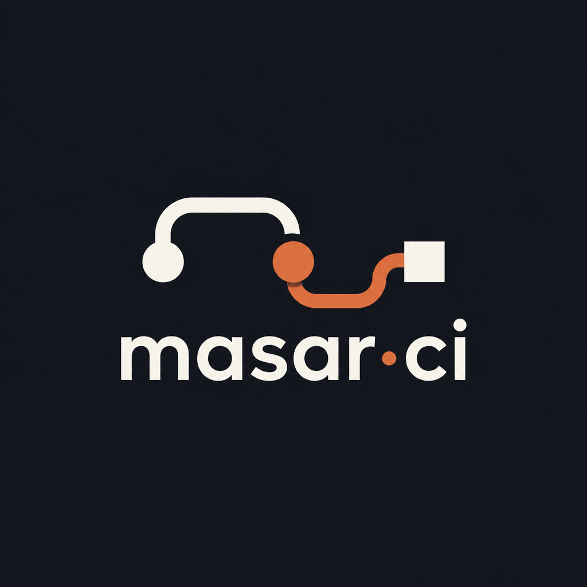
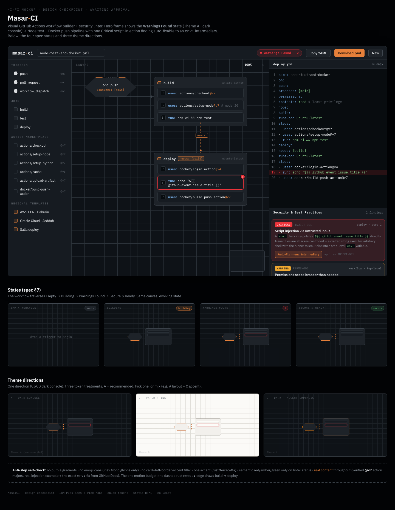

<!doctype html>
<html lang="en">
<head>
  <meta charset="UTF-8" />
  <meta name="viewport" content="width=device-width, initial-scale=1.0" />
  <title>MasarCI · Landing Page Prototypes</title>
  <script src="https://unpkg.com/react@18.3.1/umd/react.development.js" integrity="sha384-hD6/rw4ppMLGNu3tX5cjIb+uRZ7UkRJ6BPkLpg4hAu/6onKUg4lLsHAs9EBPT82L" crossorigin="anonymous"></script>
  <script src="https://unpkg.com/react-dom@18.3.1/umd/react-dom.development.js" integrity="sha384-u6aeetuaXnQ38mYT8rp6sbXaQe3NL9t+IBXmnYxwkUI2Hw4bsp2Wvmx4yRQF1uAm" crossorigin="anonymous"></script>
  <script src="https://unpkg.com/@babel/standalone@7.29.0/babel.min.js" integrity="sha384-m08KidiNqLdpJqLq95G/LEi8Qvjl/xUYll3QILypMoQ65QorJ9Lvtp2RXYGBFj1y" crossorigin="anonymous"></script>
  <script src="https://cdn.jsdelivr.net/npm/three@0.160.0/build/three.min.js"></script>
  <link rel="preconnect" href="https://fonts.googleapis.com" />
  <link rel="preconnect" href="https://fonts.gstatic.com" crossorigin />
  <link href="https://fonts.googleapis.com/css2?family=IBM+Plex+Mono:wght@400;500;600&family=IBM+Plex+Sans:wght@400;500;600;700&display=swap" rel="stylesheet" />
  <style>
    :root {
      --bg: oklch(0.18 0.012 250);
      --surface: oklch(0.22 0.014 250);
      --surface-2: oklch(0.255 0.014 250);
      --border: oklch(0.32 0.016 250);
      --border-strong: oklch(0.40 0.018 250);
      --ink: oklch(0.96 0.004 250);
      --muted: oklch(0.66 0.016 250);
      --faint: oklch(0.48 0.014 250);
      --accent: oklch(0.70 0.15 52);
      --secure: oklch(0.72 0.15 150);
      --critical: oklch(0.62 0.22 25);
      --sans: 'IBM Plex Sans', sans-serif;
      --mono: 'IBM Plex Mono', monospace;
    }
    * { box-sizing: border-box; }
    html { scroll-behavior: smooth; background: var(--bg); }
    body { margin: 0; min-width: 320px; color: var(--ink); background: var(--bg); font-family: var(--sans); }
    button, a { font: inherit; }
    button { cursor: pointer; }
    a { color: inherit; text-decoration: none; }
    .gallery-shell { min-height: 100vh; background: var(--bg); }
    .gallery-bar { position: sticky; top: 0; z-index: 20; display: flex; justify-content: space-between; align-items: center; gap: 20px; padding: 13px 28px; border-bottom: 1px solid var(--border); background: color-mix(in oklch, var(--bg) 92%, transparent); backdrop-filter: blur(16px); }
    .gallery-label { color: var(--faint); font: 10px var(--mono); letter-spacing: .16em; text-transform: uppercase; }
    .variant-tabs { display: flex; gap: 6px; }
    .variant-tabs button { padding: 7px 11px; border: 1px solid transparent; border-radius: 3px; color: var(--muted); background: transparent; font: 10px var(--mono); letter-spacing: .06em; }
    .variant-tabs button[aria-pressed="true"] { border-color: var(--accent); color: var(--accent); background: color-mix(in oklch, var(--accent) 10%, transparent); }
    .landing { overflow: hidden; position: relative; }
    .landing::before { content: ''; position: absolute; z-index: 0; inset: 0; pointer-events: none; background-image: linear-gradient(color-mix(in oklch, var(--border) 35%, transparent) 1px, transparent 1px), linear-gradient(90deg, color-mix(in oklch, var(--border) 35%, transparent) 1px, transparent 1px); background-size: 64px 64px; mask-image: linear-gradient(to bottom, #000, transparent 72%); opacity: .26; }
    .landing-inner { position: relative; z-index: 1; max-width: 1320px; margin: 0 auto; padding: 0 32px; }
    .hero { min-height: 700px; display: grid; grid-template-columns: minmax(300px, .9fr) minmax(460px, 1.1fr); align-items: center; gap: 28px; padding: 76px 0 110px; }
    .hero-copy { position: relative; z-index: 2; max-width: 560px; }
    .eyebrow { display: inline-flex; align-items: center; gap: 9px; margin-bottom: 28px; color: var(--accent); font: 11px var(--mono); letter-spacing: .15em; text-transform: uppercase; }
    .eyebrow::before { content: ''; width: 26px; height: 1px; background: var(--accent); }
    h1 { max-width: 700px; margin: 0; font-size: clamp(50px, 6.4vw, 102px); line-height: .94; letter-spacing: -.06em; text-wrap: balance; }
    .hero-copy p { max-width: 470px; margin: 28px 0 0; color: var(--muted); font-size: 17px; line-height: 1.65; text-wrap: pretty; }
    .hero-actions { display: flex; align-items: center; gap: 13px; margin-top: 34px; }
    .cta { display: inline-flex; align-items: center; gap: 12px; min-height: 46px; padding: 0 18px; border: 1px solid var(--accent); border-radius: 3px; color: #15171b; background: var(--accent); font-weight: 700; }
    .cta:hover { filter: brightness(1.08); }
    .quiet-link { color: var(--muted); font: 12px var(--mono); }
    .quiet-link:hover { color: var(--ink); }
    .hero-meta { display: flex; flex-wrap: wrap; gap: 18px; margin-top: 64px; color: var(--faint); font: 10px var(--mono); letter-spacing: .04em; }
    .hero-meta strong { color: var(--ink); font-weight: 500; }
    .hero-stage { position: relative; min-height: 530px; border: 1px solid var(--border); background: color-mix(in oklch, var(--surface) 72%, transparent); }
    .hero-stage::after { content: ''; position: absolute; pointer-events: none; inset: 0; box-shadow: inset 0 0 80px color-mix(in oklch, var(--bg) 72%, transparent); }
    .webgl-stage { position: absolute; inset: 0; overflow: hidden; }
    .webgl-stage canvas { display: block; width: 100%; height: 100%; }
    .stage-caption { position: absolute; left: 18px; bottom: 17px; z-index: 2; color: var(--faint); font: 10px var(--mono); letter-spacing: .08em; text-transform: uppercase; }
    .stage-state { position: absolute; right: 18px; top: 17px; z-index: 2; display: inline-flex; align-items: center; gap: 8px; color: var(--secure); font: 10px var(--mono); }
    .stage-state::before { content: ''; width: 6px; height: 6px; border-radius: 50%; background: currentColor; box-shadow: 0 0 12px currentColor; }
    .logo-tile { position: absolute; right: 28px; bottom: 24px; z-index: 3; width: 76px; height: 76px; object-fit: cover; opacity: .92; mix-blend-mode: screen; }
    .signal-card { position: absolute; left: 28px; bottom: 28px; z-index: 3; padding: 11px 13px; border: 1px solid color-mix(in oklch, var(--accent) 56%, var(--border)); background: color-mix(in oklch, var(--surface-2) 88%, transparent); font: 10px var(--mono); }
    .signal-card b { color: var(--accent); font-weight: 500; }
    .flow-label { position: absolute; z-index: 3; pointer-events: none; display: grid; gap: 4px; min-width: 118px; padding: 8px 10px; border: 1px solid color-mix(in oklch, var(--border-strong) 78%, transparent); background: color-mix(in oklch, var(--surface-2) 92%, transparent); box-shadow: 0 12px 22px color-mix(in oklch, var(--bg) 55%, transparent); font: 10px var(--mono); }
    .flow-label b { color: var(--ink); font-weight: 500; }
    .flow-label small { color: var(--faint); font: 9px var(--mono); }
    .flow-label em { color: var(--accent); font-style: normal; }
    .flow-trigger { left: 8%; top: 42%; border-color: color-mix(in oklch, var(--accent) 60%, var(--border)); }
    .flow-build { left: 43%; top: 27%; }
    .flow-deploy { left: 43%; top: 66%; }
    .flow-deploy em { color: var(--critical); }
    .proof-strip { display: grid; grid-template-columns: 1.1fr 1fr 1fr; gap: 0; border-top: 1px solid var(--border); border-bottom: 1px solid var(--border); }
    .proof-strip div { min-height: 112px; padding: 24px 22px; border-right: 1px solid var(--border); }
    .proof-strip div:last-child { border-right: 0; }
    .proof-strip small { display: block; margin-bottom: 12px; color: var(--faint); font: 10px var(--mono); letter-spacing: .12em; text-transform: uppercase; }
    .proof-strip span { color: var(--ink); font-size: 18px; }
    .section { display: grid; grid-template-columns: .75fr 1.25fr; gap: 60px; padding: 132px 0; border-bottom: 1px solid var(--border); }
    .section-kicker { color: var(--accent); font: 10px var(--mono); letter-spacing: .14em; text-transform: uppercase; }
    .section h2 { max-width: 600px; margin: 18px 0 0; font-size: clamp(34px, 4vw, 64px); line-height: .98; letter-spacing: -.05em; text-wrap: balance; }
    .section-copy { max-width: 520px; margin: 0; color: var(--muted); font-size: 18px; line-height: 1.65; }
    .feature-list { display: grid; grid-template-columns: repeat(3, 1fr); gap: 22px; margin-top: 48px; }
    .feature { padding-top: 18px; border-top: 1px solid var(--border-strong); }
    .feature-index { color: var(--accent); font: 11px var(--mono); }
    .feature h3 { margin: 34px 0 12px; font-size: 18px; }
    .feature p { margin: 0; color: var(--muted); font-size: 14px; line-height: 1.6; }
    .builder-reference { display: grid; grid-template-columns: .8fr 1.2fr; gap: 50px; align-items: center; }
    .builder-reference img { width: 100%; border: 1px solid var(--border); display: block; }
    .builder-reference figcaption { margin-top: 10px; color: var(--faint); font: 10px var(--mono); }
    .closing { display: flex; align-items: end; justify-content: space-between; gap: 40px; padding: 132px 0 150px; }
    .closing h2 { max-width: 750px; margin: 14px 0 0; font-size: clamp(44px, 6vw, 96px); line-height: .94; letter-spacing: -.06em; }
    .closing p { max-width: 350px; margin: 0 0 6px; color: var(--muted); line-height: 1.6; }
    .footer { display: flex; justify-content: space-between; padding: 20px 0 28px; color: var(--faint); font: 10px var(--mono); letter-spacing: .06em; }
    .variant-motion .hero { grid-template-columns: 1fr; min-height: 780px; padding-top: 84px; }
    .variant-motion .hero-copy { max-width: 740px; }
    .variant-motion .hero-stage { min-height: 500px; margin-top: -24px; }
    .variant-motion .hero-copy p { max-width: 570px; }
    .variant-motion h1 { max-width: 860px; }
    .variant-motion .proof-strip { grid-template-columns: repeat(3, 1fr); }
    .variant-flightdeck { --accent: oklch(0.78 0.15 75); }
    .variant-flightdeck .hero { grid-template-columns: 1.15fr .85fr; }
    .variant-flightdeck .hero-stage { min-height: 580px; order: -1; }
    .variant-flightdeck .section { grid-template-columns: 1.1fr .9fr; }
    .variant-flightdeck .proof-strip { grid-template-columns: repeat(3, 1fr); }
    @media (max-width: 850px) {
      .gallery-bar { align-items: flex-start; flex-direction: column; gap: 10px; }
      .landing-inner { padding: 0 18px; }
      .hero, .variant-flightdeck .hero, .section, .builder-reference { display: block; }
      .hero { min-height: 0; padding: 70px 0 70px; }
      .hero-stage, .variant-motion .hero-stage, .variant-flightdeck .hero-stage { min-height: 420px; margin-top: 50px; }
      .hero-meta { margin-top: 38px; }
      .proof-strip, .variant-motion .proof-strip, .variant-flightdeck .proof-strip { grid-template-columns: 1fr; }
      .proof-strip div { border-right: 0; border-bottom: 1px solid var(--border); }
      .proof-strip div:last-child { border-bottom: 0; }
      .section { padding: 86px 0; }
      .section-copy { margin-top: 30px; }
      .feature-list { grid-template-columns: 1fr; }
      .builder-reference img { margin-top: 38px; }
      .closing { display: block; padding: 86px 0 110px; }
      .closing p { margin-top: 30px; }
      .footer { display: block; line-height: 2; }
    }
    @media (prefers-reduced-motion: reduce) {
      html { scroll-behavior: auto; }
    }
  </style>
</head>
<body>
  <div id="root"></div>
  <script type="text/babel">
    const { useEffect, useRef, useState } = React;

    const landingVariants = {
      observatory: {
        id: 'observatory', label: 'A · Workflow Observatory',
        eyebrow: 'BUILD THE PATH',
        title: <>Make your CI<br /><em>legible.</em></>,
        description: 'MasarCI turns YAML into a workflow you can see, inspect, and improve before it reaches production.',
        stage: 'Live workflow graph · orbit 01', signal: 'trigger → build → deploy',
        caption: 'The whole path, in one frame.',
        proof: ['Visual builder', 'Security linting', 'Downloadable YAML'],
        speed: .00016, spacing: 1, hue: 0,
        features: [['01', 'Shape the path', 'Arrange triggers, jobs, and dependencies on a canvas that keeps the system in view.'], ['02', 'Catch the risk', 'See line-linked findings beside the workflow instead of hunting through a file.'], ['03', 'Ship with intent', 'Export readable YAML after the model is secure and ready.']],
      },
      motion: {
        id: 'motion', label: 'B · Pipeline in Motion',
        eyebrow: 'LET THE SYSTEM MOVE',
        title: <>From trigger<br />to <em>trust.</em></>,
        description: 'A pipeline is not a list. It is a living path of decisions, dependencies, and signals. MasarCI lets developers feel the system before they ship it.',
        stage: 'Continuous motion study · orbit 02', signal: 'watch the dependency resolve',
        caption: 'One graph. Many states.',
        proof: ['Drag to arrange', 'Trace dependencies', 'Preview fixes'],
        speed: .00028, spacing: 1.16, hue: 8,
        features: [['01', 'Start with a signal', 'Triggers become visible entry points, not buried YAML keys.'], ['02', 'Follow the dependency', 'needs: edges carry motion through the graph so the order makes sense.'], ['03', 'Resolve the edge', 'Warnings become a guided next move, not a dead-end report.']],
      },
      flightdeck: {
        id: 'flightdeck', label: 'C · Security Flight Deck',
        eyebrow: 'SECURITY IN THE FLOW',
        title: <>Ship fewer<br /><em>surprises.</em></>,
        description: 'Build workflows with the security context attached. Permissions, triggers, and actions stay visible while you shape the pipeline.',
        stage: 'Risk surface · orbit 03', signal: 'least privilege / visible',
        caption: 'Clarity is a security feature.',
        proof: ['Permissions matrix', 'Severity signals', 'Auto-fix diffs'],
        speed: .00011, spacing: .9, hue: 26,
        features: [['01', 'See the surface', 'A workflow graph makes the blast radius easier to reason about.'], ['02', 'Pin the signal', 'Action versions and security findings sit close to the step they affect.'], ['03', 'Fix with evidence', 'Preview a diff before an automatic repair touches your YAML.']],
      },
    };

    function WorkflowCanvas({ variant }) {
      const mountRef = useRef(null);
      useEffect(() => {
        const mount = mountRef.current;
        if (!mount || !window.THREE) return undefined;
        const THREE = window.THREE;
        const scene = new THREE.Scene();
        const camera = new THREE.PerspectiveCamera(34, 1, .1, 100);
        camera.position.set(0, 0, 8.6);
        const renderer = new THREE.WebGLRenderer({ antialias: true, alpha: true });
        renderer.setPixelRatio(Math.min(window.devicePixelRatio || 1, 2));
        renderer.setClearColor(0x000000, 0);
        mount.appendChild(renderer.domElement);
        const root = new THREE.Group();
        root.rotation.x = -.12;
        scene.add(root);
        scene.add(new THREE.AmbientLight(0xffffff, 1.9));
        const key = new THREE.PointLight(0xf1a05e, 8, 18);
        key.position.set(2.5, 3.5, 4);
        scene.add(key);
        const cardShape = (width, height, radius) => {
          const shape = new THREE.Shape();
          shape.moveTo(-width / 2 + radius, -height / 2);
          shape.lineTo(width / 2 - radius, -height / 2);
          shape.quadraticCurveTo(width / 2, -height / 2, width / 2, -height / 2 + radius);
          shape.lineTo(width / 2, height / 2 - radius);
          shape.quadraticCurveTo(width / 2, height / 2, width / 2 - radius, height / 2);
          shape.lineTo(-width / 2 + radius, height / 2);
          shape.quadraticCurveTo(-width / 2, height / 2, -width / 2, height / 2 - radius);
          shape.lineTo(-width / 2, -height / 2 + radius);
          shape.quadraticCurveTo(-width / 2, -height / 2, -width / 2 + radius, -height / 2);
          return shape;
        };
        const triggerPoint = { x: -2.45 * variant.spacing, y: .72 * variant.spacing, z: .12 };
        const buildPoint = { x: .1 * variant.spacing, y: .8 * variant.spacing, z: 0 };
        const deployPoint = { x: .1 * variant.spacing, y: -1.18 * variant.spacing, z: .18 };
        const nodeMeshes = [];
        const cardMaterial = new THREE.MeshStandardMaterial({ color: 0x252b32, emissive: 0x151a20, emissiveIntensity: .24, roughness: .4, metalness: .32 });
        const cardGeometry = new THREE.ExtrudeGeometry(cardShape(1.95, 1.35, .1), { depth: .24, bevelEnabled: true, bevelSize: .045, bevelThickness: .04, bevelSegments: 2 });
        [buildPoint, deployPoint].forEach((point, cardIndex) => {
          const card = new THREE.Mesh(cardGeometry, cardMaterial.clone());
          card.position.set(point.x, point.y, point.z);
          card.userData.baseZ = point.z;
          root.add(card);
          nodeMeshes.push(card);
          [0xf4efe2, 0xf4efe2, cardIndex === 1 ? 0xc95b4d : 0xf09a4d].forEach((color, stepIndex) => {
            const stripe = new THREE.Mesh(new THREE.BoxGeometry(1.45, .075, .035), new THREE.MeshStandardMaterial({ color, emissive: color, emissiveIntensity: .12 }));
            stripe.position.set(point.x - .05, point.y - .36 + stepIndex * .22, point.z + .28);
            root.add(stripe);
          });
        });
        const trigger = new THREE.Mesh(new THREE.CylinderGeometry(.55, .55, .2, 6), new THREE.MeshStandardMaterial({ color: 0xf09a4d, emissive: 0xf09a4d, emissiveIntensity: .18, roughness: .3, metalness: .38 }));
        trigger.rotation.x = Math.PI / 2;
        trigger.position.set(triggerPoint.x, triggerPoint.y, triggerPoint.z);
        trigger.userData.baseZ = triggerPoint.z;
        root.add(trigger);
        nodeMeshes.unshift(trigger);
        const connector = (points, color, dashed = false) => {
          const geometry = new THREE.BufferGeometry().setFromPoints(points.map(([x, y, z]) => new THREE.Vector3(x, y, z)));
          const material = dashed ? new THREE.LineDashedMaterial({ color, dashSize: .11, gapSize: .08, transparent: true, opacity: .9 }) : new THREE.LineBasicMaterial({ color, transparent: true, opacity: .72 });
          const line = new THREE.Line(geometry, material);
          if (dashed) line.computeLineDistances();
          root.add(line);
        };
        connector([[triggerPoint.x + .55, triggerPoint.y, .18], [buildPoint.x - .98, buildPoint.y, .06]], 0x7c858b);
        connector([[buildPoint.x, buildPoint.y - .68, .12], [buildPoint.x, deployPoint.y + .68, .2]], 0xf09a4d, true);
        connector([[deployPoint.x + .98, deployPoint.y, .2], [deployPoint.x + 1.45, deployPoint.y, .2]], 0x87c59a);
        const dustGeometry = new THREE.BufferGeometry();
        const dust = new Float32Array(180 * 3);
        for (let i = 0; i < dust.length; i += 3) { dust[i] = (Math.random() - .5) * 11; dust[i+1] = (Math.random() - .5) * 7; dust[i+2] = (Math.random() - .5) * 4; }
        dustGeometry.setAttribute('position', new THREE.BufferAttribute(dust, 3));
        root.add(new THREE.Points(dustGeometry, new THREE.PointsMaterial({ color: 0xf09a4d, size: .018, transparent: true, opacity: .52 })));
        const pointer = { x: 0, y: 0 };
        const onPointer = (event) => { const rect = mount.getBoundingClientRect(); pointer.x = ((event.clientX - rect.left) / rect.width - .5) * 2; pointer.y = ((event.clientY - rect.top) / rect.height - .5) * 2; };
        mount.addEventListener('pointermove', onPointer);
        const resize = () => { const width = mount.clientWidth || 1; const height = mount.clientHeight || 1; camera.aspect = width / height; camera.updateProjectionMatrix(); renderer.setSize(width, height, false); };
        resize();
        window.addEventListener('resize', resize);
        const reduced = window.matchMedia('(prefers-reduced-motion: reduce)').matches;
        let raf = 0;
        const animate = (now) => {
          const t = now * variant.speed;
          if (!reduced) {
            root.rotation.y += (pointer.x * .13 + Math.sin(t) * .06 - root.rotation.y) * .028;
            root.rotation.x += (-pointer.y * .08 - .12 + Math.cos(t * .7) * .025 - root.rotation.x) * .028;
            nodeMeshes.forEach((mesh, i) => { mesh.position.z = mesh.userData.baseZ + Math.sin(t * 6 + i) * .08; mesh.rotation.x += .003 + i * .0004; mesh.rotation.y -= .002; });
          }
          renderer.render(scene, camera);
          raf = requestAnimationFrame(animate);
        };
        raf = requestAnimationFrame(animate);
        return () => { cancelAnimationFrame(raf); mount.removeEventListener('pointermove', onPointer); window.removeEventListener('resize', resize); renderer.dispose(); mount.removeChild(renderer.domElement); };
      }, [variant]);
      return <div ref={mountRef} className="webgl-stage" aria-label="Animated 3D workflow graph showing the MasarCI sample pipeline" role="img"><div className="stage-caption">{variant.caption}</div><div className="stage-state">{variant.signal}</div><div className="flow-label flow-trigger"><b>on: push</b><small>branches: [main]</small></div><div className="flow-label flow-build"><b>build</b><small>ubuntu-latest · 3 steps</small></div><div className="flow-label flow-deploy"><b>deploy</b><small>needs: [build] · <em>finding</em></small></div></div>;
    }

    function App() {
      const [activeId, setActiveId] = useState('observatory');
      const variant = landingVariants[activeId];
      return <div className="gallery-shell">
        <div className="gallery-bar">
          <span className="gallery-label">MasarCI · landing page study · true WebGL</span>
          <div className="variant-tabs" role="tablist" aria-label="Landing page directions">
            {Object.values(landingVariants).map(item => <button key={item.id} type="button" role="tab" aria-selected={item.id === activeId} aria-pressed={item.id === activeId} onClick={() => setActiveId(item.id)}>{item.label}</button>)}
          </div>
        </div>
        <div className={`landing variant-${variant.id}`}>
          <div className="landing-inner">
            <header className="site-header">
              <div className="footer"><span style={{color:'var(--ink)',fontSize:14,letterSpacing:'-.03em'}}>masar<span style={{color:'var(--accent)'}}>·</span>ci</span><span>Visual GitHub Actions builder · security linter</span></div>
            </header>
            <main>
              <section className="hero">
                <div className="hero-copy">
                  <div className="eyebrow">{variant.eyebrow}</div>
                  <h1>{variant.title}</h1>
                  <p>{variant.description}</p>
                  <div className="hero-actions"><a className="cta" href="../web/">Open builder <span aria-hidden="true">↗</span></a><a className="quiet-link" href="#system">See the system ↓</a></div>
                  <div className="hero-meta"><span><strong>01</strong> / visual workflow</span><span><strong>02</strong> / security context</span><span><strong>03</strong> / readable YAML</span></div>
                </div>
                <div className="hero-stage"><WorkflowCanvas variant={variant} /><div className="signal-card"><b>PATH STATUS</b><br />{variant.signal}</div></div>
              </section>
              <section className="proof-strip" aria-label="MasarCI capabilities">
                {variant.proof.map((item, i) => <div key={item}><small>0{i + 1}</small><span>{item}</span></div>)}
              </section>
              <section className="section" id="system">
                <div><div className="section-kicker">The workflow is the interface</div><h2>Keep the system in view.</h2></div>
                <div><p className="section-copy">The landing page should feel like the product: quiet surfaces, visible paths, and enough signal to make a confident next move.</p><div className="feature-list">{variant.features.map(([index,title,body]) => <article className="feature" key={index}><div className="feature-index">{index}</div><h3>{title}</h3><p>{body}</p></article>)}</div></div>
              </section>
              <section className="section builder-reference">
                <div><div className="section-kicker">From concept to canvas</div><h2>Design the path. Then open the builder.</h2><p className="section-copy">A real workflow view anchors the promise: arrange the graph, inspect the YAML, and resolve security findings in the same working surface.</p></div>
                <figure style={{margin:0}}><figcaption>Existing builder surface · reference asset</figcaption></figure>
              </section>
              <section className="closing"><div><div className="section-kicker">Ready when the pipeline is</div><h2>Make the next run easier to trust.</h2></div><div><p>Open a blank workflow or bring an existing YAML file into a visual, security-aware workspace.</p><a className="cta" href="../web/">Open builder <span aria-hidden="true">↗</span></a></div></section>
            </main>
            <footer className="footer"><span>masar<span style={{color:'var(--accent)'}}>·</span>ci</span><span>Landing study · {variant.label}</span></footer>
          </div>
        </div>
      </div>;
    }

    ReactDOM.createRoot(document.getElementById('root')).render(<App />);
  </script>
</body>
</html>
